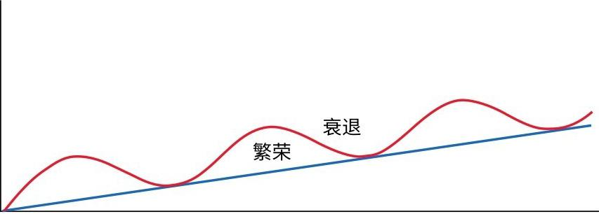
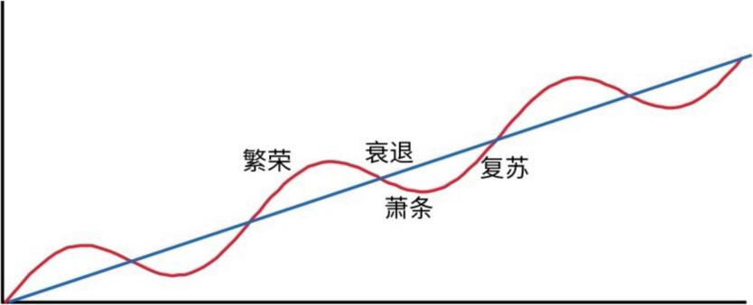
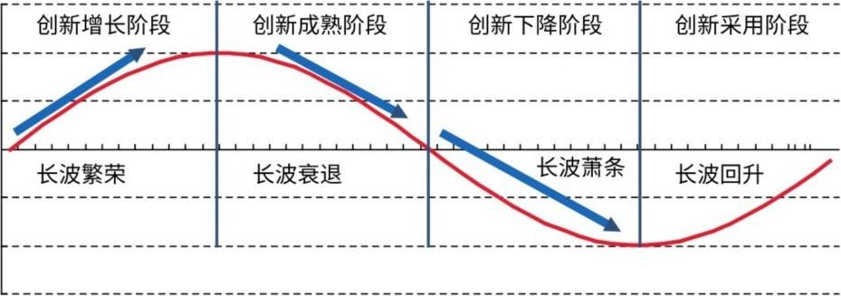
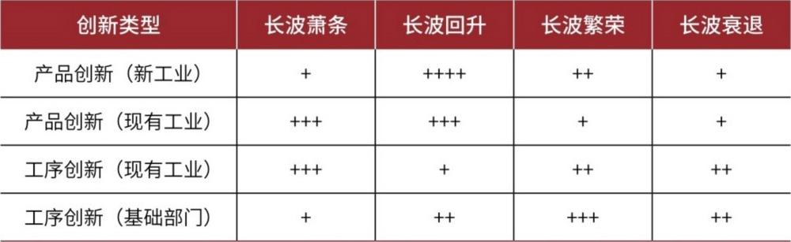
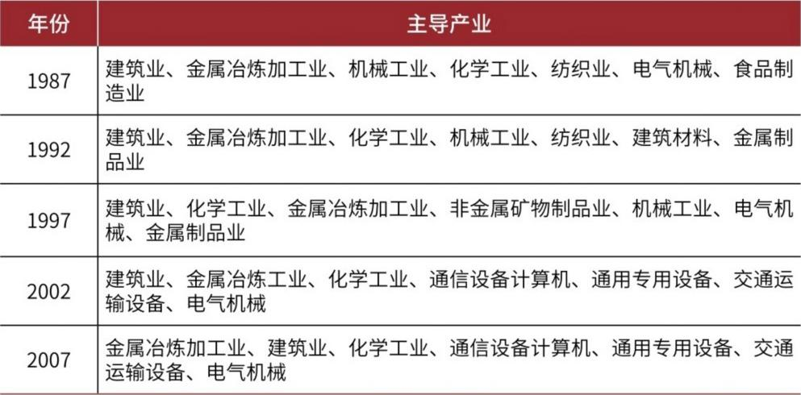
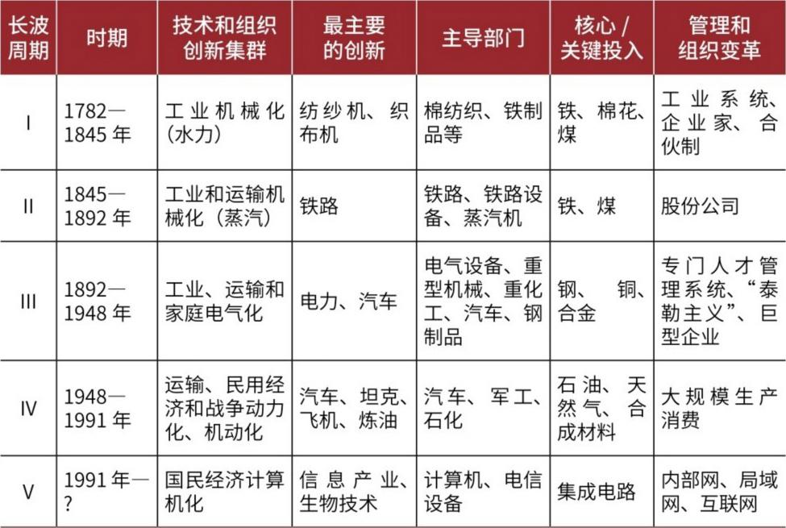
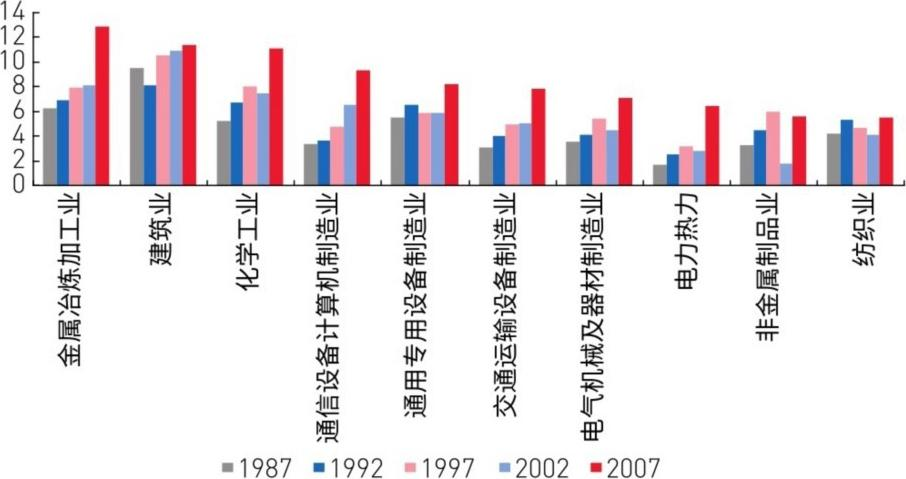
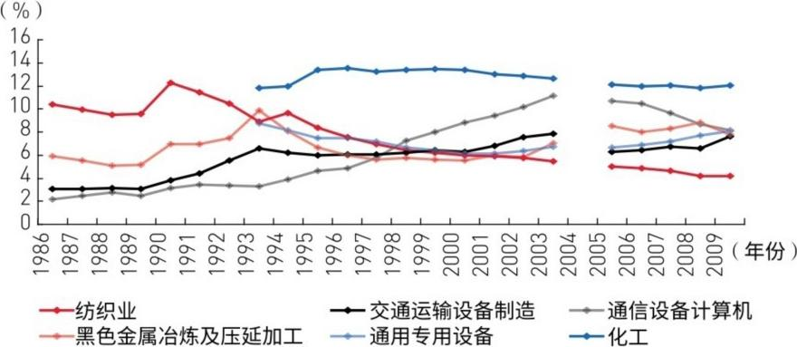

07 三周期嵌套——从熊彼特到罗斯托
研究团队比较了所有主流经济周期理论（凯恩斯、希克斯、弗里德曼、哈耶克、熊彼特…），提出了选理论的四个标准：
① 合理性：我们只关心"经济会怎么走"，不关心"经济应该怎么走"。熊彼特的态度最对路——只分析不教做人。
② 前瞻性：要能用理论提前判断拐点。熊彼特的"从属波突变"概念让拐点判断变得可能。
③ 开放性：框架要灵活。熊彼特的三周期之外，还能塞进其他周期（比如房地产周期、库存周期）。
④ 可观测性：要有看得见摸得着的指标来跟踪。熊彼特的从属波有明确的周期时长规律。
结论：以熊彼特为核心框架，把凯恩斯、哈耶克、弗里德曼等人的精华融合进来。
熊彼特对"创新"的定义非常宽泛——不只是发明新技术，而是"把生产要素重新组合"。包括五种：① 新产品/新质量；② 新生产方法；③ 新市场；④ 新原料渠道；⑤ 新企业组织形式（如打破垄断）。
关键区分：创新 ≠ 技术发明。一般的企业经理 ≠ 企业家。企业家是那种"敢为天下先"、把创新付诸实践的人。熊彼特最著名的概念："创造性的破坏"——不断从内部摧毁旧结构、创造新结构。这就是资本主义的本质。
熊彼特最简单的周期模型只有两阶段：上升 → 下降。
上升怎么来的？经济原来处于均衡状态（没有闲置资源）→ 企业家看到创新机会 → 从银行借钱投资 → 打破均衡 → 其他企业家跟风模仿 → 形成"创新风暴"→ 抢购生产资料推高价格 → 信贷扩张 → 物价上涨 → 经济繁荣。
下降怎么来的？创新产品大量上市 → 价格下跌 + 成本上升（生产资料涨价了）→ 利润被压缩 → 银行信贷紧缩 → 企业倒闭 → 经济回落，回归均衡。
核心逻辑：创新是间断的、不连续的 → 所以经济必然是周期波动的，不可能持续繁荣。一次创新带来的上升结束之后，下一次创新还没来，经济就会下行。

两阶段模型太干净了，现实远比它复杂——因为存在"从属波"。从属波 = 创新引发的连锁反应 + 投机心理 + 跟风投机活动。它们会大幅放大周期振幅。
四阶段模型 = 繁荣 → 衰退 → 萧条 → 复苏。
繁荣：创新引发信贷扩张→带动消费需求→大量投机出现→经济越过均衡点→过度繁荣（泡沫）。
衰退：新产品大量上市→价格跌→繁荣结束→企业家还债→购买力消失→经济衰退。
萧条：创新推动力消失+从属波戛然而止→经济下降越过衰退直入萧条→投机消失+正常活动也被破坏。
复苏：从属波影响消退→极低利率刺激新投资→复苏开始。但要走向新一轮繁荣，必须有新的创新活动。
关键区分：复苏和衰退是经济体自身的适应过程（自动发生）；繁荣和萧条是偏离均衡的运动（分别由创新和投机引起）。

三种周期，时长不同，驱动力不同：
🔵 长波（康德拉季耶夫周期）≈50-60年——由重大创新集群驱动（如蒸汽机、铁路、电力、信息技术）。
🟢 中波（朱格拉周期）≈9-10年——由设备投资和资本支出驱动。
🟡 短波（基钦周期）≈40个月——由企业库存调整驱动。
嵌套关系：1个长波 = 6个中波 = 18个短波。1个中波 = 3个短波。
长波是"大背景"，制约着中波的繁荣/萧条程度；中波又制约着短波。三者方向一致时趋势清晰，方向冲突时看谁主导。
长波理论其实不是康德拉季耶夫最先提出的——荷兰人范·盖尔德伦1912年就写了《春潮》，公认是长波理论的起源。他总结了长波上升的六大因素：重大产品创新→新主导产业、资本过度投资、信用扩张、原材料稀缺、世界市场扩大和移民、黄金生产。
为什么长波是50年？各家说法不一：罗斯托说因为农产品和原材料价格波动需要50年；范杜因说因为基础设施有生命周期（革新→成长→成熟→饱和→衰退）；福雷斯特模拟出30年投资+10年饱和+10年衰退=50年；门斯说因为创新从"蓄水池"里一个接一个冒出来需要时间；贝里说1个长波=2个库兹涅茨周期（每个约25年）。



我们客观承认熊彼特理论有五大缺陷：
① 短周期难解释：创新能解释长波和中波，但40个月的库存周期波动很难用创新来解释。而且创新本身难以量化观测。
② 没说清楚什么创新有用：不是随便什么创新都能带来繁荣——得是主导产业中的创新才行（这需要罗斯托来补充）。
③ 忽略了政策干预：现实中的逆周期调控（凯恩斯式刺激）会对周期产生巨大影响，熊彼特对此着墨太少。
④ 忽略了人口：日本不缺创新但陷入了20年衰退——因为人口老龄化和房地产周期终结。人口不只是"增长因素"那么简单。
⑤ 奥地利学派的批评：忽略了时间偏好和利率的作用；假设创新有周期性但没解释为什么；不能解释经济的频繁波动。
虽然有这些缺陷，但我们认为做适当补充后，熊彼特理论仍然是分析经济周期最好的框架。
罗斯托补充了熊彼特遗漏的关键环节：创新→主导产业→经济繁荣。
不是所有创新都能带来繁荣——只有发生在主导产业中的创新才行。主导产业的特征：引领作用强、产业链带动效应大、扩散效应广。
不同工业化阶段有不同主导产业：起飞阶段=纺织/铁路/重工业；成熟阶段=钢铁/电力/煤炭/机械/化肥；大众消费阶段=房屋建筑/汽车/耐用消费品。
核心逻辑链：微观创新 → 中观主导产业 → 宏观经济繁荣。
范杜因把创新生命周期分为四阶段对应长波四阶段：采用（萧条期）→ 增长（回升期）→ 成熟（繁荣期）→ 下降（衰退期）。
长波萧条期=大量产品创新出现（寻找新方向）；回升期=创新需求增加、技术标准化；繁荣期=不太冒险做产品创新了，主要做工序创新降成本；衰退期=市场饱和、创新最不活跃。
当前（2013年，长波衰退阶段）：最主要创新是效率提升的工序创新（管理创新），革命性产品创新仍在萌芽，未来的主导产业还不清晰。

日本战后主导产业的完美接力：
1946-1960（复兴期）：煤炭+钢铁+火力发电——先从能源突破，解决"缺电"问题。
1960-1973（高速增长）：石油化工+钢铁——重化工业螺旋式发展：自动化→高质量低价格原材料→造船需求→钢铁需求→运输需求→循环放大。
1973-1990（稳定增长）：汽车+家用电器——人均收入从113美元→1560美元，消费升级驱动。
1990至今（泡沫后）：信息技术——传统主导产业成熟，转向IT立国。信息产业逐渐成为21世纪日本第一主导产业。
中国主导产业演化：纺织 → 电气 → 通信计算机+设备制造+汽车 → 信息技术（建筑、钢铁、化工、机械是贯穿始终的基础产业）。
1980s：纺织业是第一主导（出口带动+产业升级）；1990s：电气机械、金属制品、建材取代轻纺；2002后：信息技术+汽车成为新引擎。

当前（2013年）：全球还没有出现能替代信息产业的新主导产业，中国面临长波约束。本轮中周期（高点2011年已过）的主导产业群=房地产+钢铁+化工+信息+汽车。但需要清醒：在熊彼特看来，房地产只是创新繁荣下的"从属波"（投机产业），不是经济周期的本质驱动力，但它会增加波动幅度。

七大新兴产业（节能环保、新一代IT、生物制药、高端制造、新能源、新材料、新能源汽车）：短期成不了新主导产业，但正处于萌芽成长期。未来10年（长波萧条期）这些产业的创新会更活跃，但真正的下一代主导产业可能还处在我们不认识、不知道的阶段。
本章的核心递进逻辑：
熊彼特的创新概念（五种新组合，创造性破坏）→ 两阶段模型（创新→繁荣→模仿扩散→衰退，纯理论）→ 四阶段模型（加上从属波=投机，繁荣→衰退→萧条→复苏，更接近现实）→ 三周期嵌套（长波套中波套短波，核心精髓）→ 罗斯托的补充（只有主导产业中的创新才能推动繁荣）→ 范杜因的补充（创新有生命周期，对应长波不同阶段）→ 日中的实证（主导产业的接力演化）。
💡 本章核心要点：三周期嵌套是熊彼特理论的精髓——1个长波（50-60年）=6个中波=18个短波。长波是"大背景"，制约中波和短波。创新是周期的根本驱动力，但只有主导产业中的创新才能带来真正的经济繁荣。罗斯托和范杜因填补了熊彼特关于"什么创新有用"的理论空白。当前（2013年）全球处于长波衰退阶段，七大新兴产业还在萌芽期，未来的主导产业尚未明朗。
| 原文术语 | 白话解释 |
|---|---|
| 创新（熊彼特式） | 不是单纯的技术发明，而是"生产要素的新组合"——新产品、新方法、新市场、新原料、新组织 |
| 创造性破坏 | 熊彼特的核心概念：资本主义的本质就是不断从内部摧毁旧结构、创造新结构 |
| 从属波 | 创新引发的连锁反应+投机心理+跟风投机，会大幅放大经济周期振幅 |
| 两阶段模型 | 只包含繁荣和衰退的简化模型，反映创新驱动周期的纯理论本质 |
| 四阶段模型 | 繁荣→衰退→萧条→复苏，考虑了从属波（投机）后的完整周期模型 |
| 三周期嵌套 | 熊彼特理论精髓：长波(50-60年)套中波(9-10年)套短波(40个月)，1长波=6中波=18短波 |
| 长波/康德拉季耶夫周期 | 约50-60年的超长周期，由重大创新集群驱动 |
| 中波/朱格拉周期 | 约9-10年的资本支出周期，由设备投资驱动 |
| 短波/基钦周期 | 约40个月的库存周期，由企业存货调整驱动 |
| 主导产业 | 罗斯托的概念：具有足够创新、引领经济增长、带动整个产业链的产业 |
| 创新生命周期 | 范杜因的理论：创新有采用→增长→成熟→下降四个阶段，对应长波不同阶段 |
| 技术僵局 | 门斯的概念：旧技术饱和、新技术尚未成熟的状态，只有创新才能打破 |
| 产业关联效应 | 一个产业对上下游产业的带动和扩散作用，是甄别主导产业的关键指标 |
| 库兹涅茨周期 | 约20-25年的建筑业/房地产周期，贝里认为1长波=2库兹涅茨周期 |